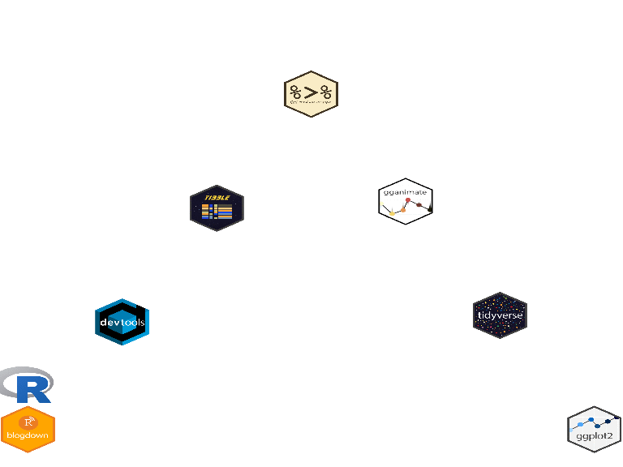

Making an animated ggplot
I decide to talk about how I make my awesome blog banner in this first post. 😄
Why this banner ?
It’s a french wordplay with my family name Sauder => Saut d’R (R jump in english). That’s why I decided to make a banner with the R-logo jumping on some (so cool) stickers. I choose stickers of packages that I use to do this animated ggplot.
Which packages ?
library(tidyverse)
# install.packages("devtools")
# devtools::install_github("GuangchuangYu/ggimage")
# devtools::install_github('thomasp85/gganimate')
library(ggimage)
library(magick)
library(gganimate)
Firstly, I always use the tidyverse 📦, because it contains dplyr, ggplot2, purrr… and some other unavoidable packages.
Then, to deal with images, my favorite package is magick, an other unavoidable package ! It allows to read/write/transform/convert images, and to make some beautiful GIF too. See the vignette for more informations, it’s really cool.
To replace ggplot2 points by some images, I find the ggimage package. And to animate these images, the gganimated package.
Jumping trajectory
This part is not very interesting and you probably do this better, but it’s just about describing jumps with data.
x0 <- -8:8
y <- rep((-x0^2)/100 +1 ,3 )
y <- y + seq(0,3, length.out = length(y))
y <- c(y, rev(y))
# just to have a look
plot(y)

Get images and tidy data
Firstly, a tibble (a tidy data.frame if you don’t know yet) with the R trajectory y, the abscissa x and x1 which will serve to animate R, and the R logo url directory in image.
ly <- length(y)
# first tibble for R trajectory
d <- tibble(
x = 1:ly,
x1 = 1:ly,
y = y,
image = rep("https://www.r-project.org/logo/Rlogo.png",ly)
)
Then I decide to make a local copy of the R logo image, resizing it at 200px for witdh, because even if ggimage can deal with url images, it took a long time to do this with the 102 images. So I use the magick package to read, scale, and write the R logo.
#local copy of Rlogo
"https://www.r-project.org/logo/Rlogo.png" %>%
image_read() %>%
image_scale("200") %>%
image_write("Rlogo.png")
I add the column image2 to the tibble with the name of the R logo file.
d <- d %>%
mutate(image2 = rep("Rlogo.png",ly))
Display and animate the R logo
Now we have all we need to animate the R logo. So let’s test this !
Firstly just with geom_image :
options(gganimate.dev_args = list(width = 400, height = 300))
gg <- ggplot(d, aes(x, y)) +
geom_image(aes(image=image2), size=.1 , by = 'width')
gg

It seems to work, so now, let’s animate this logo, after quiting lines and grey background with theme_nothing. For now, I test the “linear” ease but others are available and describe in the function ease_aes help.
gg <- gg +
theme_nothing() +
transition_time(x1) +
ease_aes('linear')
gg
Add the stickers on the plot
Now let’s add the stickers. I make an other tibble to deal with a different aes in ggplot. I put the url directory of some beautiful stickers.
x3 = seq(0,ly, by = length(x0))
y3 = c(0.36,d$y[x3])
y3 = y3 - 0.4
d2 <- tibble(
x3 = x3+2,
y3 = y3,
hex = c(
#"https://github.com/rstudio/hex-stickers/blob/main/PNG/blogdown.png",
"https://raw.githubusercontent.com/rstudio/hex-stickers/main/PNG/blogdown.png",
#"https://github.com/rstudio/hex-stickers/raw/master/PNG/blogdown.png",
"https://raw.githubusercontent.com/rstudio/hex-stickers/main/PNG/devtools.png",
"https://raw.githubusercontent.com/rstudio/hex-stickers/main/PNG/tibble.png",
"https://raw.githubusercontent.com/rstudio/hex-stickers/main/PNG/pipe.png",
#"https://github.com/thomasp85/gganimate/raw/master/man/figures/logo.png",
"https://github.com/thomasp85/gganimate/raw/main/man/figures/logo.png",
"https://raw.githubusercontent.com/rstudio/hex-stickers/main/PNG/tidyverse.png",
"https://raw.githubusercontent.com/rstudio/hex-stickers/main/PNG/ggplot2.png"
)
)
Now the part using magick to locally copy the images. To process all the images at once, I use the map2_chr function of the purrr package
hex2 <- d2$hex %>%
image_read() %>%
image_scale("200")
hex2 il a tibble, so I transform it in a list to give it to map2_chr.
Why map2_chr and not just map2 ?
Because I want characters 😄
You can do the same with map2 if you unlist the result.
hex3 <- map2_chr(as.list(hex2), basename(d2$hex), image_write)
d2 <- d2 %>%
mutate(hex3 = hex3)
Once the column with the files names added to the tibble, we can plot it.
I just have to change ylim of the ggplot because min(y3) < min(y)
gg <- gg +
ylim(min(y3)-0.2,max(y)) +
geom_image(data = d2, aes(x=x3, y=y3, image = hex3), size = .1, by = 'height')
gg

Yes ! It’s better like this. If you love the result you can save it with anim_save.
anim_save("saut_dR.gif")
I remove images locally copied.
unlink(c("Rlogo.png", hex3))